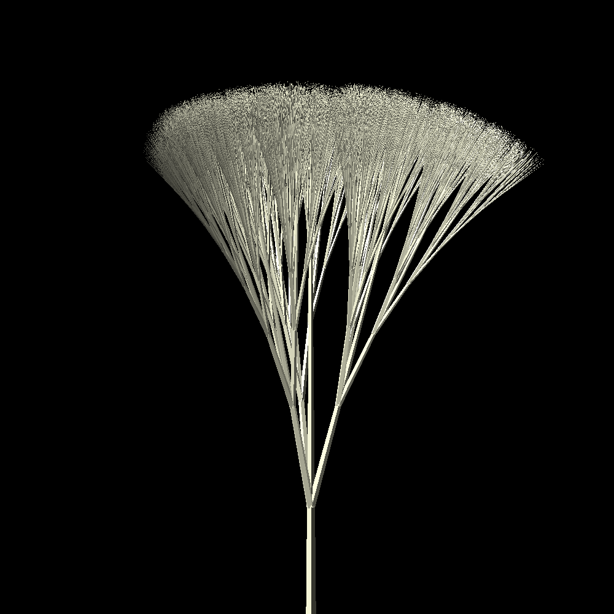

link to this page
Human Genus
 The human genus encompasses many different human species, which due to centuries of genetic engineering are no longer able to cross-breed and naturally produce viable offspring.
The term "genus" is used questionably since its intended use in biological taxonomy does not encompass genetic engineering, and as such only vaguely fits the current situation of the many different homo sapiens variants, given that one human species could have been derived from multiple different ancestor species rather than having differentiated from a single one.
The human genus encompasses many different human species, which due to centuries of genetic engineering are no longer able to cross-breed and naturally produce viable offspring.
The term "genus" is used questionably since its intended use in biological taxonomy does not encompass genetic engineering, and as such only vaguely fits the current situation of the many different homo sapiens variants, given that one human species could have been derived from multiple different ancestor species rather than having differentiated from a single one.
It also excludes uploaded humans since it focuses primarily on genetic grouping, which can cause confusion when uploads are considered humans yet not considered part of the human genus.
For collaborative writing purposes this helps fit the setting into human-absent or human-taken writing where humanity is either not present at all or so rigidly defined that the existence of a distant human-descendant civilization like that in the Spider Cluster is not possible.
Most science fiction settings in which aliens exist will present at least one alien species that is psychologically indistinguishable from humans and at least somewhat anatomically similar, which is sufficient to bridge the gap by using it in place of humans as needed.
Homo Terran
"Homo Terran" is the more common modern term for Homo Sapiens, a direct evolutionary ancestor to every other species in the human genus.
The term "Homo Sapiens" is technically more correct, but after introduction of other human species had taken on supremacist connotations given that it seems to distinguish this one for being "Sapiens", ie. wise or intelligent given the latin translation - nonetheless some insist on using it either because they do genuinely believe in terran human superiority or because that's just the correct scientific term regardless of their beliefs.
It is occasionally also mistaken with the term "homosapients" which refers broadly to all human species
Physical characteristics
The average homo terran masses 75kg and stands 1.75m tall.
Homo Venusian
Homo Venusian is an engineered species belonging to the human genus specially adapted to living in the environment of modern venus, having built-in resistance to the extreme cold and high pressure.
celular adaptations
Homo venusian cells produce tardigrade damage protection proteins that protect the cells from damage due to freezing and dehydration, much like in tardigrades from which the genes to produce these protein were sourced. Their cells also accumulate a high concentration of glucose much like wood frogs, further protecting the cells from potential ice crystal formation and the resulting damage.
The end result is that venusian humans experience frostbite very differently.
A fully frozen body part could be thawed out and only suffer painful inflamation for a while before returning to normal, rather than becoming necrotic.
In extreme cases this allows the venusian humans to enter cryptobiosis and be revived later instead of dying to cold, and in some cases can also survive dessication thanks to the same protective mechanisms.
These celular behaviours also require a domino chain of further adaptations to mitigate the negative and potentially fatal effects they would otherwise have if introduced into normal homo terran cells, which is the main barrier separating venusian humans into their own species within the human genus.
Most of the changes that separate homo venusian the original homo terran are actually contained in a separate new chromosome.
anatomical adaptations

Fractal fur:
The skin of venusian humans grows artificially engineered fractal fur that is given unique properties by its recursive structure.
The hair follicles is made to grow densely in spots and equipped with simple chemical signaling, as well as supportive cells that help coordinate the process and produce the chemicals needed for merging hairs, which allow them to cooperate to grow a single structure.
Initially all the follicles grow separate hairs which are very thin, but gradually get thicker as they grow, then when they've grown long enough the follicles release signals that cause them to group up in threes, causing the hairs they grow to become merged at the base as it comes out due to chemicals released by helper cells located directly between the three follicles.
This process repeats after the merged hair grows long enough, and each group of 3 follicles finds 3 other groups to merge together into a group of 9.
It repeats until all the follicles had joined together, effectively forming a hair that starts off very thick at the base but recursively splits into 3 smaller hairs until becoming a collection of very thin hairs.
This structure causes a layer of air to be trapped near the skin, which is stopped from escaping by a dense layer formed a little further away from the skin.
When operating in environments where temperatures rise high enough for liquid water to be present, these feathers can become a problem as they are extremely proficient at absorbing water due to their microscopic structure especially at the finer end.
Their shape incidentally often makes them create deformed depictions of the serpinski triangle when plucked and viewed from the tip in weightlessness, which is sometimes noted as a beautiful emergent property of how they grow but doesn't have any practical implication.
Heat-exchanging nose:
The nose of homo venusian is massively oversized compared to regular humans, with roughly half the volume of the head itself.
It is largely empty on the inside, and internally shaped in a particular way such that upon breathing out the air from the lungs flows straight to the outside without mixing with the air already present in the nose, but will nonetheless transfer heat to the various internal structures of the nose.
Upon breathing in these structures will transfer the heat to the incoming air, and at the same time force turbulent flow, causing it to mix with the air that had already been there for a while and had time to warm up.
In effect the air that enters the nostrills will not actually get to the lungs until several breaths later until it is properly warmed up, yet does not accumulate excess carbon dioxide since it does not mix inhaled and exhaled air.
Thermal mass:
Larger body decreases the surface to volume ratio, allowing them to maintain body heat for longer.
A typical healthy venusian human would mass 150kg and stand 2.2m tall, having 200% the body mass of an average homo terran while being only 126% as tall and having 159% as much skin.
Homo Amorphous
Homo Amorphous is a human species engineered for radically increased neuroplasticity, to create a human species whose brains accept augmentation vastly easier than those of the homo terran.
It had been long known that the human brain has an amazing ability to turn things attached to itself into parts of itself, and the homo amorphous species was made to capitalize on that ability to the highest extent reasonably achievable.
Physically augmenting one's body is slightly more common in homo amorphous cultures compared to the homo terran, mainly thanks to the barrier of having to get used to the implants being less severe.
Increased neurodiversity is also a feature of the species, occuring mainly as a side effect of the genetic tuning for increased neuroplasticity.
modified neurological features
Most of the features in homo amorphous are merely modified or fine-tuned versions of the neurological mechanisms which already existed in their homo terran ancestors.
-
Enhanced synaptic formation and decay - modified versions of several genes affecting the formation of synapses are present in homo amorphous that allow connections to be formed
Non-terran neurological features
todo
Physical modifications
Homo Amorphous have some notable differences from homo terran in anatomy and bodily function that are not directly related to the brain.
-
Lesser immune response - homo amorphous generally have a slower immune response, and also acquire immunological tolerance easier (lack of immune response to foreign substances that were introduced gradually), which leaves them more vulnerable to fast-acting diseases but helps the body accept implants of various kinds.
Homo Inanis
"Homo Inanis" is a modified variant of the common homo terran, with many mutations and introduced engineered genes ensuring that the central nervous system never develops.
They serve as a base genetic template for growable designed bodies that provides high certainty that any further modifications made to the genome will not accidentally reverse the central nervous system development blockage and end up accidentally growing a fully sentient, living feeling person.
The creation of a Homo Inanis person requires that the brain be added artificially.
This is typically done to enable reimplementation of an existing digitized human mind in a new brain tissue culture, as a means of downloading a digital mind into an organic body, or reviving an organic mind in a new body given sufficient data collected before their death.
relevant pages